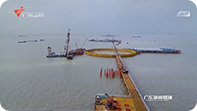

《规划纲要》十一讲：共建粤港澳合作发展平台
唱响大湾区进行曲 专访前海管理局香港事务首席联络官洪为民
前海在港召开落实《规划纲要》政策推介会 发挥重大平台作用 强化合作发展引擎功能
实施大湾区发展规划纲要 增强核心引擎功能 有序推动国际邮轮港建设 促进大湾区旅游发展
粤港澳大湾区：加快推进重大平台建设 引领带动粤港澳全面合作
粤港澳大湾区：紧密合作共同参与“一带一路”建设
余治国观察 大湾区下的深港合作：强强联手 极点带动

深圳：发挥特区引领作用 加快推进大湾区建设
实施大湾区发展规划纲要 增强核心引擎功能 适应国际化营商环境需要 深圳国际仲裁院推出十大措施
粤港澳大湾区：建设国际科技创新中心

中共中央 国务院印发《粤港澳大湾区发展规划纲要》
实施大湾区发展规划纲要 增强核心引擎功能 深圳各界：蓝图已绘就 奋进正当时
实施大湾区发展规划纲要 增强核心引擎功能 41次提及深圳 “核心引擎”功能清晰突出